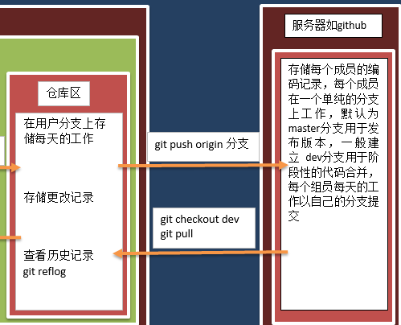
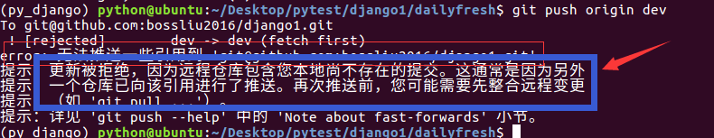
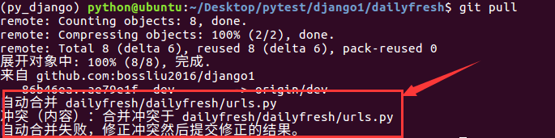

本地与服务器
- 本地与服务器交互的方式及命令如下

- 推送指将特定分支在本地仓库区的记录发送到服务器上
- 获取指将服务器特定分支向本地工作区同步
获取
- 建议：在每天开始编写代码前，先与服务器同步一次；或者在公用分支如dev上开发时，建议先同步后开发
- 什么时候会用到dev分支呢？答：合并阶段代码到dev分支，编辑公用文件如dailyfresh/urls.py
- 1.切换到dev分支
git checkout dev
- 2.获取代码，如果dev分支上有更新的记录则会同步到本地
git pull
- 3.切换回自己的分支继续开发
git checkout zhujiao
推送
- 建议：在每天下班前将当天开发推送到服务器，这样可以在服务器中存储一个备份，即使本机出问题，在服务器上还能存在代码备份
- 注意：只会将仓库区的记录提交到服务器的对应分支下
- 推送前要将此分支跟踪服务器上的同名分支，推荐在创建分支时就完成跟踪
- 如果要推送自己分支以外的分支，需要先获取，再解决冲突，然后再推送
git push origin zhujiao
合并分支
- 一个功能模块开发完了，合并到dev分支
- 1.切换到dev分支
git checkout dev
- 2.获取代码，如果dev分支上有更新的记录则会同步到本地
git pull
- 3.合并
git merge zhujiao
- 4.添加、提交并推送
git push origin dev
- 5.切换回工作分支
git checkout zhujiao
- 6.在最新代码上继续开发，所以将dev分支合并到zhujiao分支
git merge dev
解决冲突
- 建议：在更改公用文件如dailyfresh/urls.py时需要操作dev分支，因为大家都可以操作dev分支，所以在合并时可能出现冲突
- 冲突的示例如下，修改dailyfresh/urls.py文件
项目经理的操作
- 1.项目经理负责前台的开发，需要修改dailyfresh/urls.py文件
git checkout dev
- 2.在dailyfresh/urls.py文件中添加一条url
from django.conf.urls import include, url
from django.contrib import admin
urlpatterns = [
url(r'^admin/', include(admin.site.urls)),
url(r'^',include('df_goods.urls')),
]
- 3.添加并提交
git add dailyfresh/urls.py
git commit -m '配置前台url'
- 4.同步到服务器
git push origin dev
员工助教的操作
- 1.员工助教负责用户模块的开发，需要修改dailyfresh/urls.py文件
git checkout dev
- 2.在dailyfresh/urls.py文件中添加一条url
from django.conf.urls import include, url
from django.contrib import admin
urlpatterns = [
url(r'^admin/', include(admin.site.urls)),
url(r'^user/',include('df_user.urls')),
]
- 3.添加并提交
git add dailyfresh/urls.py
git commit -m '配置用户模块url'
- 4.向服务器推送
git push origin dev
- 5.推送时发现出错误了，错误信息如下图

- 根据提示，需要先获取服务器的变更
git pull
- 发现有冲突，而且自动合并冲突失败，需要手动合并冲突，指向dailyfresh/urls.py文件

- 当前dailyfresh/urls.py文件内容如下
from django.conf.urls import include, url
from django.contrib import admin
urlpatterns = [
url(r'^admin/', include(admin.site.urls)),
<<<<<<< HEAD
url(r'^user/',include('df_user.urls')),
=======
url(r'^',include('df_goods.urls')),
>>>>>>> ae79e1fd93d0d9e7f8ca36481c611a2b4a38a9db
]
- 其中，<<<<<<< HEAD表示当前版本的内容，=======后面，表示>>>>>>> ae79e1fd93d0d9e7f8ca36481c611a2b4a38a9db版本的内容，发现两句代码并不冲突，都需要保留，如果不能确定是否保留，可以与编写该语句的人员沟通，当前代码更改后如下
from django.conf.urls import include, url
from django.contrib import admin
urlpatterns = [
url(r'^admin/', include(admin.site.urls)),
url(r'^user/',include('df_user.urls')),
url(r'^',include('df_goods.urls')),
]
- 6.冲突解决完成，再次添加、提交、推送
git add dailyfresh/urls.py
git commit -m '配置用户模块url-解决冲突后'
git push origin dev